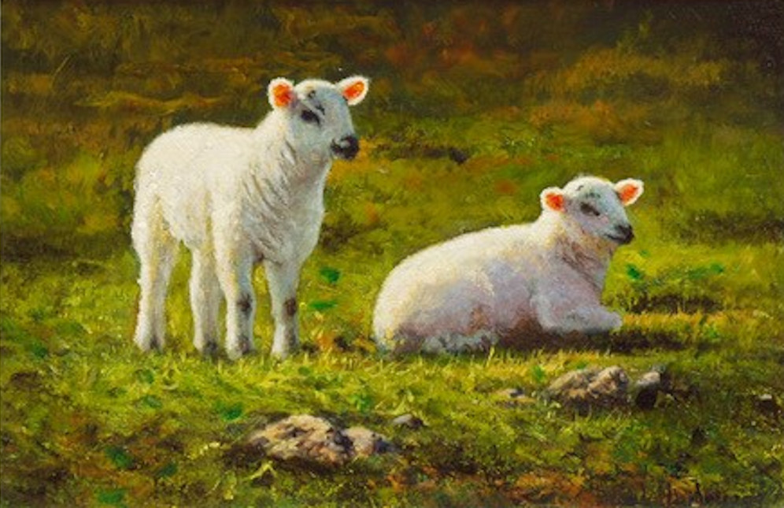

Classic Lamb

Nordic specialty! (Sorry, not for vegetarians... obviously)
It's one of the most popular dishes out there! If you ever visit one of the nordic countries, make sure to check it out. Sheep roam everywhere freely and get access to the best grass there is, so the quality of meat is outstanding.
Ingredients
- Lamb meat
- Some spices of choice
- Water
Steps
- Hunt the lamb!
- Get the meat from it.
- Boil the meat with your favourite spices.
- Enjoy!